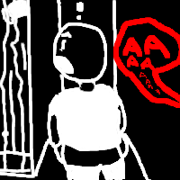
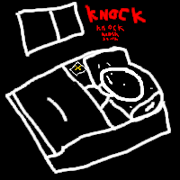

I think it's only fitting that I recall what God has done for me, instead of only calling his existence terrifying.
I had abit of a rough time in High School, I was a nerd, I had no friends, and was ridiculed quite often by everyone.
Despite this, I would keep to myself. But there came a point I just couldn't take it anymore mentally.
I believe my decrease in sanity had 2 factors, taking an extra pill of my epilepsy medicine and the bullying.
The reason for me taking an extra pill was because when I only took 1 pill, I would still have spasms but when I had 2 they basically be gone for the most part, the trade off being is that I would have more violent thoughts.
Anyways, it started off with me being more fucked up in the head, not getting much sleep at night, and I thought everyone was out to get me.
Eventually, I have to start keeping the light on at night when I sleep because I was so fucking scared of the dark.
One day in the library, I'm on my phone scrolling through Twitter. My back is laid against the bookshelf and there's a group sitting at a table behind it. They're talking about something, not sure what, but then I can't hear them at all. Not that weird. Then I hear some voices mumbling, it's quiet at first, then it gets louder, I'm freaking out thinking, "Is this actually happening?", and then it stops and I can hear the group as if they never stopped talking.
I had 2 other major incidents similar to this, one being when I was going to the restroom, I was pulling down my pants taking a leak. Then I hear a woman screaming right behind me and I look back, but there's nothing there and the screaming is fading away.
The other major incident was when I was lying in bed one night, and I heard a knock at the window. I get up, pick up a flashlight and shine it outside, but I don't see anything. I lie back down and hear another knock, I get up again and shine my flashlight outside but there's nothing there, and I lie back in bed. The 3rd time, I hear a knock but it doesn't stop and it gets louder, I get really scared and grab the Bible beside me and put it on my chest, and the knocking ceases
So yeah, this is my experience with God, I have other stories to tell, which I may write about. But I just wanted to tell THIS story in specific.